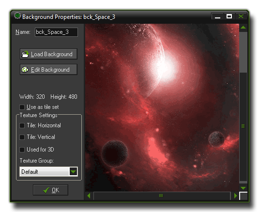
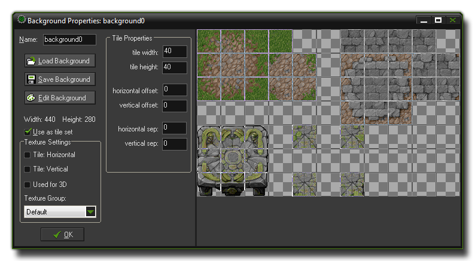

Backgrounds
Backgrounds are another of the basic resources that you can use in GameMaker:Studio.
These are usually large images that are used as backgrounds (or foregrounds) for the rooms in which the game takes place,
but they can also be large images composed of many smaller ones called tiles which you can then place individually in your room to create complex visual designs for levels with far less processing overhead than you
would get with objects and sprites.
NOTE : If you are using the Free version of GameMaker:Studio you are limited to a maximum of 5 backgrounds per game. For more details see
here.
To create a background resource in your game, use the Create Background option from the drop down Resources menu or use the corresponding button on the toolbar. Either of those will cause the following
window to open :

As with all resources, you must give a name to your backgrounds for reference within GameMaker:Studio and so you can identify them easily, although you should note that the actual name itself is really just a
variable which holds a number that "points" to the resource, in this case a background. It's best to give each background a descriptive name so that you can identify at a glance whether a particular resource is a background
or an object or anything else, and many people do this by prefixing or suffixing the resource with the letters "bck". For example, the above image could be called bck_Horizon or Horizon_bck.
Below the "Name" section are the buttons that enable you to load, save or edit a background image. If you select "Load Background", you will get the standard file selector where you can choose supported image file (png, gif,
bmp, jpeg.) and also tell GM to make that image opaque (remove transparency), or make it transparent (this takes the color from the bottom left hand corner pixel as the base color to
make transparent) or to smooth the edges of the background (only when it is transparent). Once you have selected the file and the options, clicking the "Open" button will load the background into GameMaker:Studio
ready to be used in your games. Editing the background can be done within GameMaker:Studio too, and we have a whole section in the Advanced Use part of the manual that deals with this
here.
Be careful with using large backgrounds, especially if your target device is Html5 or one of the smaller mobile devices, as large backgrounds need more memory and this could be a problem later when you try to compile your game.
You should also be aware that backgrounds in GameMaker:Studio are designed to tile and this means they have overlapping pixels on either side, so if you see any strange artefacts (transparent lines, extra pixels etc.)
then you should possibly be using sprites instead for the graphical effect you wish to achieve.
Editing Backgrounds
For editing backgrounds, GameMaker:Studio has its own included Image Editor which is quite powerful, although not as complete as many dedicated art packages available. For information on how to use it,
please see the section More About Sprites : Editing Subimages as there is exactly the same set of tools available for backgrounds as for sprites.
Backgrounds as Tiles
Sometimes you want to have a background image broken up into a set of tiles, which basically means, one large image composed of different sub images that can all be linked together. When creating rooms you can then add these
subimages at different places to create beautiful levels with graphical effects that are "cheap" in that they use very little processing power to draw. Please note that tiles are purely graphical and do not have most of the
properties you would find in an object or a sprite which is why they are fast. To use a background as a tile set, check the box labelled Use as tile set and the background window now changes to look as follows:

Now you can indicate a number of settings for the tile set, like the width and height for each tile (only one size can be given, so better make sure that all tiles in the set have the same size. If you have different sizes, create two or
more tile sets). You can also indicate an offset (in pixels) where the top left-most tile starts as well as a separation between the tiles (in pixels) between the tiles themselves. For more information on tiles see the section in the
Advanced Use part of the manual More About Backgrounds, and for information on how to use tiles in the room editor you can go to the section
More About Rooms.